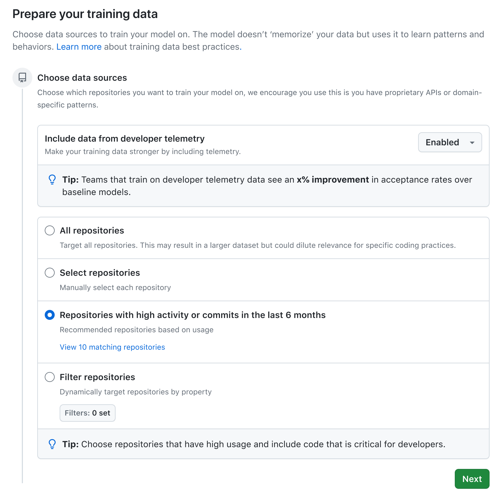
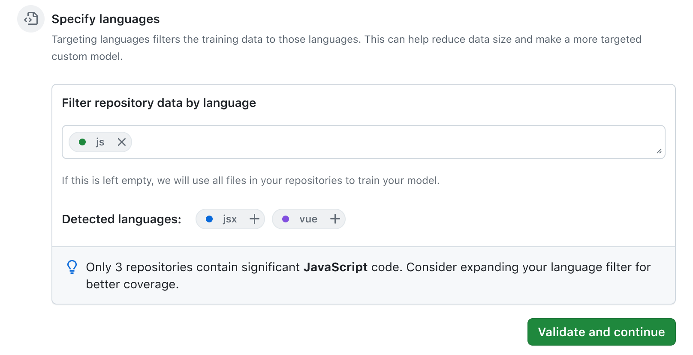
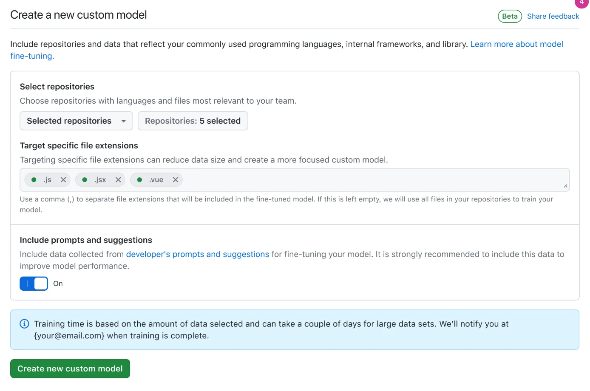

Copilot custom models
Helping enterprise admins choose what a model learns from, without becoming training experts.
I led design end to end, from the limited-beta refinements through the design for general availability. The preview was retired before that design shipped.
Every picture here is from the design file, not the product. Placeholder copy, review marks and illustrative counts are left in on purpose.
A page of its own
Training a model on your organization’s code is a data decision before it is anything else. The design for general availability gives that decision a page of its own, in two steps: choose the sources, then narrow by language. Everything an admin needs to decide is on the page, and the page tells them when a choice will not work.

Two decisions, not one
Permission to collect data is one decision. Using that data to train a model is another.
The organization policy decides whether developer telemetry is collected at all. The control at the top of step one decides whether this model learns from it. Keeping those two scopes apart matters more than any other control on the page, so the choice gets the first position, its own explanation, and a tip that says why you might want it.

Choosing sources
Most admins do not know which repositories make a good model. Step one lays the four ways to choose side by side, so the trade-off is visible instead of implied: everything, a hand-picked list, whatever has been active lately, or a filter by property. Recent activity is the default, and a link shows what it would include before you commit.
Guidance in the decision
Step two narrows by language. Detected languages are offered as additions, and when a filter leaves too little to learn from, the page says so before you continue. The guidance lives in the decision, not in documentation.
This idea has an ancestor. The beta card had no reliable training estimate, so rather than offer a number we could not stand behind, its banner said what the wait depended on and how you would know it was done:
Training time is based on the amount of data selected and can take a couple of days for large data sets. We’ll notify you at {your@email.com} when training is complete.
The coverage message is the same instinct, moved earlier: tell people what they need to know at the moment they can still act on it.

Where it began
These decisions did not start with a page. In June 2024 they went to limited beta as one card inside organization settings, under Copilot, with refinements I made to its controls and their copy. Repositories, file extensions and the prompts toggle sat in one box, and the second decision read as one more field.
{kind=link}
{kind=link}

A starting point, not a blank slate
Between the two, I explored suggested starting points: a broad model from shared code, or a focused one for a division, each reviewed before training. These stayed explorations, but the instinct behind them, that admins should begin from a sensible default rather than a blank form, is what became the recent-activity default in step one.